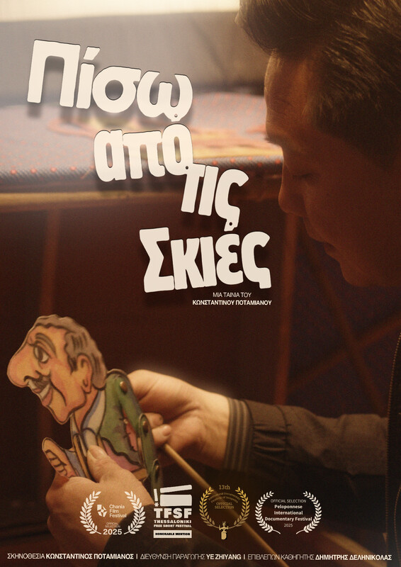

A cultural bridge between Greece and China through the shadow puppetry art.

The Greek shadow puppetry began 130 years ago. A student of Greek shadow puppetry travels to China, where shadow puppetry began over 2000 years ago. There he follows Chinese shadow puppeteer master He Shihong in Wushan of China. Watching his performances and listening to him talk about his art and his career in it, many parallels are drawn and he expresses them by including his Greek shadow puppetry teacher in the film. This documentary is a cultural bridge between Greece and China through the shadow puppetry art.
"In my childhood memories, my friends were the shadow puppets. Whenever I wanted to talk to someone, I always talked to them. A few years after the last time I was behind the cloth shadow puppetry stage in Greece, I decided to travel to the other side of the world and meet the worldwide roots of shadow puppetry. Shooting this movie was the most sentimental experience I have ever had. I was filming something that I was coming across for the first time, but strangely everything it was seems so familiar to me. It was like watching my shadow puppetry teacher preparing for a performance or creating new shadow puppets. This documentary is a cultural bridge between Greece and China through the art of shadow puppetry."